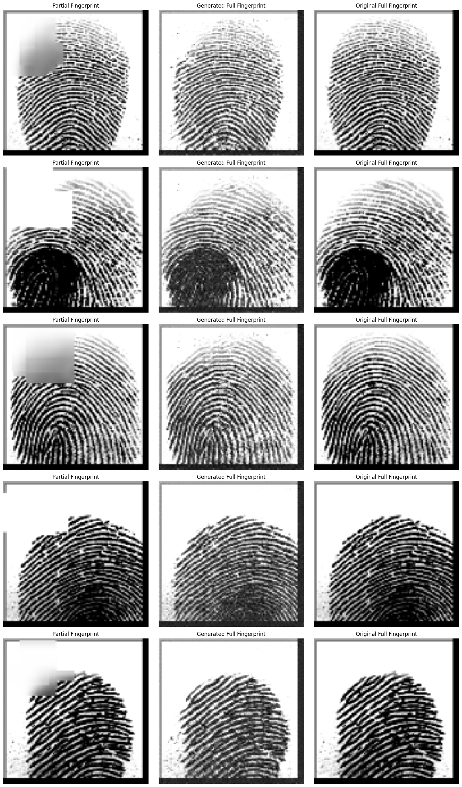

Generative reconstruction · 2024
Reconstructing a complete fingerprint from a partial image.
I built a Generative Adversarial Network that learns to recover missing fingerprint information from partial images. The interesting part was not getting a generated image on screen; it was preprocessing the data and checking whether the reconstruction had measurable similarity to the original.
- Role
- Solo, self-directed
- Stack
- Python · PyTorch · OpenCV
- Dataset
- SOCOFing, 6,000 images
- Status
- Prototype, evaluated
The problem
A fingerprint image can be incomplete because of the capture angle, sensor coverage, or the way a finger was placed. The goal was to reconstruct a plausible full image from a partial fingerprint, while keeping the result close enough to the original to be useful for analysis.
I used the SOCOFing (Sokoto Coventry Fingerprint) dataset and built the preprocessing around the actual training setup rather than treating the images as ready-made model inputs.
What I built
The generator receives a partial fingerprint and learns to fill in the missing structure. The discriminator sees real and generated images and learns to distinguish between them. Their competing objectives provide a training signal for producing more realistic reconstructions.
The notebook covers preprocessing, GAN training, generated-image inspection, model saving and loading, and evaluation. It also supports GPU acceleration when CUDA is available.

The numbers
The notebook reports two evaluation runs. The later run is included here rather than presenting only the best-looking generated image:
| Dataset | SOCOFing fingerprint dataset |
|---|---|
| Training schedule | 150-epoch GAN run |
| Average SSIM, first run | 0.6421 |
| Real-image discriminator accuracy, first run | 99.28% |
| Fake-image discriminator accuracy, first run | 91.57% |
| Average SSIM, later run | 0.6127 |
| Real-image discriminator accuracy, later run | 99.88% |
| Fake-image discriminator accuracy, later run | 91.98% |
The SSIM values show moderate structural similarity, not a claim that the reconstruction is identical to the source. The difference between the two runs is also a reminder that one generated sample or one checkpoint is not enough to establish reliable reconstruction quality.
What went wrong
The discriminator is very strong on real images and still recognises most generated images as fake. That is useful diagnostic information: visual plausibility and reconstruction fidelity are related, but they are not the same result. The notebook measures both, but does not yet include a held-out test protocol or a comparison against a simpler image-completion baseline.
I also saved and resumed checkpoints at different points in the notebook, which makes direct comparison between runs less clean than it should be. A fixed evaluation split and a single recorded experiment configuration would make the result easier to reproduce.
What I would do differently
I would define the partial-image mask and evaluation split before training, then compare the GAN with a non-generative baseline. I would report SSIM across the full held-out set, add a perceptual metric, and inspect whether the reconstructed ridge structure remains useful for downstream fingerprint matching.
The full implementation and notebook are available in the project repository.